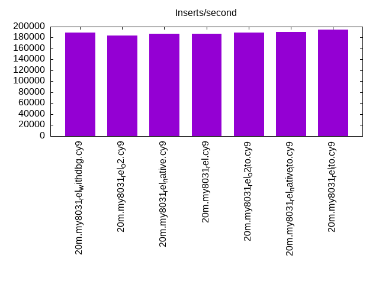
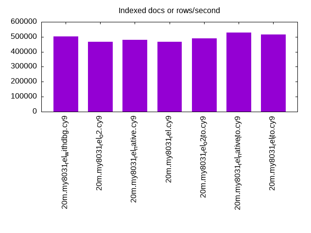
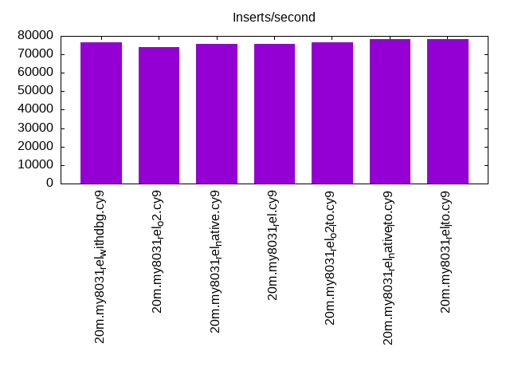
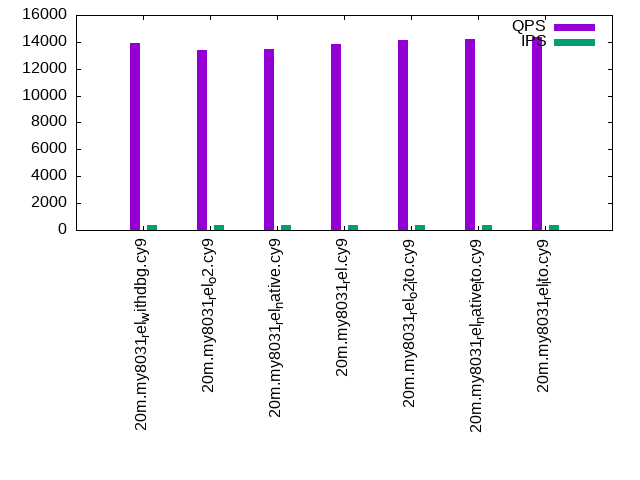
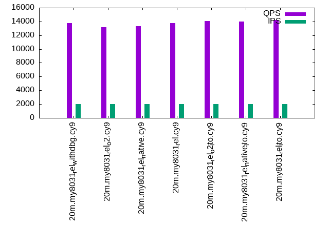
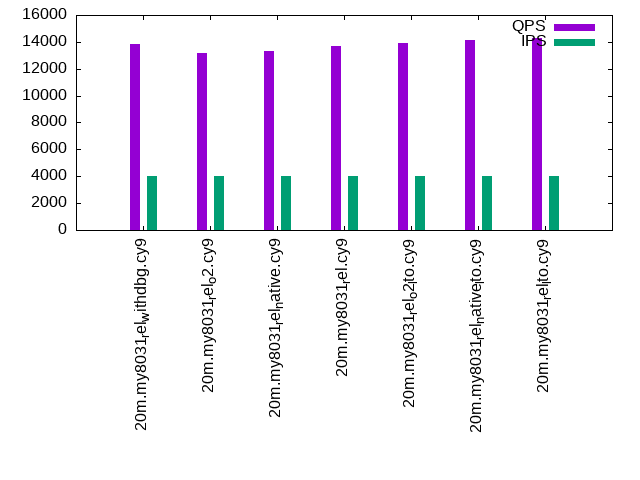

This is a report for the insert benchmark with 20M docs and 4 client(s). It is generated by scripts (bash, awk, sed) and Tufte might not be impressed. An overview of the insert benchmark is here and a short update is here. Below, by DBMS, I mean DBMS+version.config. An example is my8020.c10b40 where my means MySQL, 8020 is version 8.0.20 and c10b40 is the name for the configuration file.
The test server has 8 AMD cores, 16G RAM and an NVMe SSD. It is described here as the Beelink. The benchmark was run with 4 clients and there were 1 or 2 connections per client (1 for queries, 1 for inserts). The benchmark loads 20M rows without secondary indexes, creates secondary indexes, loads another 20M rows then does 3 read+write tests for one hour each that do queries as fast as possible with 100, 500 and then 1000 writes/second/client concurrent with the queries. There is 1 table per client. The database is cached by the storage engine and the only IO is for writes. Clients and the DBMS share one server. The per-database configs are in the per-database subdirectories here.
The tested DBMS are:
The numbers are inserts/s for l.i0 and l.i1, indexed docs (or rows) /s for l.x and queries/s for q*.2. The values are the average rate over the entire test for inserts (IPS) and queries (QPS). The range of values for IPS and QPS is split into 3 parts: bottom 25%, middle 50%, top 25%. Values in the bottom 25% have a red background, values in the top 25% have a green background and values in the middle have no color. A gray background is used for values that can be ignored because the DBMS did not sustain the target insert rate. Red backgrounds are not used when the minimum value is within 80% of the max value.
| dbms | l.i0 | l.x | l.i1 | q100.1 | q500.1 | q1000.1 |
|---|---|---|---|---|---|---|
| 20m.my8031_rel_withdbg.cy9 | 188679 | 502500 | 76628 | 13889 | 13792 | 13865 |
| 20m.my8031_rel_o2.cy9 | 183486 | 467442 | 73801 | 13370 | 13205 | 13136 |
| 20m.my8031_rel_native.cy9 | 186916 | 478571 | 75758 | 13433 | 13308 | 13312 |
| 20m.my8031_rel.cy9 | 186916 | 467442 | 75472 | 13834 | 13768 | 13660 |
| 20m.my8031_rel_o2_lto.cy9 | 188679 | 490244 | 76628 | 14137 | 14084 | 13938 |
| 20m.my8031_rel_native_lto.cy9 | 190476 | 528947 | 78125 | 14250 | 14001 | 14105 |
| 20m.my8031_rel_lto.cy9 | 194175 | 515385 | 78431 | 14381 | 14196 | 14259 |
This table has relative throughput, throughput for the DBMS relative to the DBMS in the first line, using the absolute throughput from the previous table.
| dbms | l.i0 | l.x | l.i1 | q100.1 | q500.1 | q1000.1 |
|---|---|---|---|---|---|---|
| 20m.my8031_rel_withdbg.cy9 | 1.00 | 1.00 | 1.00 | 1.00 | 1.00 | 1.00 |
| 20m.my8031_rel_o2.cy9 | 0.97 | 0.93 | 0.96 | 0.96 | 0.96 | 0.95 |
| 20m.my8031_rel_native.cy9 | 0.99 | 0.95 | 0.99 | 0.97 | 0.96 | 0.96 |
| 20m.my8031_rel.cy9 | 0.99 | 0.93 | 0.98 | 1.00 | 1.00 | 0.99 |
| 20m.my8031_rel_o2_lto.cy9 | 1.00 | 0.98 | 1.00 | 1.02 | 1.02 | 1.01 |
| 20m.my8031_rel_native_lto.cy9 | 1.01 | 1.05 | 1.02 | 1.03 | 1.02 | 1.02 |
| 20m.my8031_rel_lto.cy9 | 1.03 | 1.03 | 1.02 | 1.04 | 1.03 | 1.03 |
This lists the average rate of inserts/s for the tests that do inserts concurrent with queries. For such tests the query rate is listed in the table above. The read+write tests are setup so that the insert rate should match the target rate every second. Cells that are not at least 95% of the target have a red background to indicate a failure to satisfy the target.
| dbms | q100.1 | q500.1 | q1000.1 |
|---|---|---|---|
| my8031_rel_withdbg.cy9 | 399 | 1994 | 3989 |
| my8031_rel_o2.cy9 | 399 | 1994 | 3989 |
| my8031_rel_native.cy9 | 399 | 1994 | 3987 |
| my8031_rel.cy9 | 399 | 1993 | 3989 |
| my8031_rel_o2_lto.cy9 | 399 | 1994 | 3989 |
| my8031_rel_native_lto.cy9 | 399 | 1994 | 3989 |
| my8031_rel_lto.cy9 | 399 | 1994 | 3989 |
| target | 400 | 2000 | 4000 |
l.i0: load without secondary indexes. Graphs for performance per 1-second interval are here.
Average throughput:
Insert response time histogram: each cell has the percentage of responses that take <= the time in the header and max is the max response time in seconds. For the max column values in the top 25% of the range have a red background and in the bottom 25% of the range have a green background. The red background is not used when the min value is within 80% of the max value.
| dbms | 256us | 1ms | 4ms | 16ms | 64ms | 256ms | 1s | 4s | 16s | gt | max |
|---|---|---|---|---|---|---|---|---|---|---|---|
| my8031_rel_withdbg.cy9 | 99.234 | 0.636 | 0.110 | 0.019 | 0.121 | ||||||
| my8031_rel_o2.cy9 | 99.237 | 0.617 | 0.130 | 0.015 | 0.123 | ||||||
| my8031_rel_native.cy9 | 99.252 | 0.617 | 0.115 | 0.015 | 0.124 | ||||||
| my8031_rel.cy9 | 99.233 | 0.621 | 0.129 | 0.018 | 0.137 | ||||||
| my8031_rel_o2_lto.cy9 | 99.249 | 0.623 | 0.112 | 0.015 | 0.119 | ||||||
| my8031_rel_native_lto.cy9 | 99.252 | 0.615 | 0.118 | 0.015 | 0.116 | ||||||
| my8031_rel_lto.cy9 | 99.264 | 0.602 | 0.114 | 0.019 | 0.124 |
Performance metrics for the DBMS listed above. Some are normalized by throughput, others are not. Legend for results is here.
ips qps rps rmbps wps wmbps rpq rkbpq wpi wkbpi csps cpups cspq cpupq dbgb1 dbgb2 rss maxop p50 p99 tag 188679 0 0 0.0 344.5 51.5 0.000 0.000 0.002 0.280 20583 64.9 0.109 28 1.3 9.9 2.5 0.121 53861 5095 20m.my8031_rel_withdbg.cy9 183486 0 0 0.0 335.0 50.6 0.000 0.000 0.002 0.283 19996 64.8 0.109 28 1.3 9.9 2.5 0.123 52543 26571 20m.my8031_rel_o2.cy9 186916 0 0 0.0 341.5 51.2 0.000 0.000 0.002 0.281 20084 65.3 0.107 28 1.3 9.9 2.5 0.124 53260 34663 20m.my8031_rel_native.cy9 186916 0 0 0.0 341.4 51.2 0.000 0.000 0.002 0.281 20302 65.1 0.109 28 1.3 9.9 2.5 0.137 53342 14285 20m.my8031_rel.cy9 188679 0 0 0.0 348.2 51.7 0.000 0.000 0.002 0.281 20335 64.7 0.108 27 1.3 9.9 2.5 0.119 54341 6393 20m.my8031_rel_o2_lto.cy9 190476 0 0 0.0 340.6 52.8 0.000 0.000 0.002 0.284 21537 68.6 0.113 29 1.3 9.9 2.5 0.116 55240 35462 20m.my8031_rel_native_lto.cy9 194175 0 0 0.0 347.1 53.4 0.000 0.000 0.002 0.282 21771 68.7 0.112 28 1.3 9.9 2.5 0.124 56290 18680 20m.my8031_rel_lto.cy9
l.x: create secondary indexes.
Average throughput:
Performance metrics for the DBMS listed above. Some are normalized by throughput, others are not. Legend for results is here.
ips qps rps rmbps wps wmbps rpq rkbpq wpi wkbpi csps cpups cspq cpupq dbgb1 dbgb2 rss maxop p50 p99 tag 502500 0 3015 197.9 6553.4 446.3 0.006 0.403 0.013 0.910 20425 86.1 0.041 14 3.0 11.6 3.5 0.009 NA NA 20m.my8031_rel_withdbg.cy9 467442 0 2640 173.3 6288.0 405.1 0.006 0.380 0.013 0.887 20487 87.7 0.044 15 3.0 11.6 3.6 0.009 NA NA 20m.my8031_rel_o2.cy9 478571 0 2644 173.2 8382.6 442.5 0.006 0.371 0.018 0.947 25321 86.1 0.053 14 3.0 11.6 3.7 0.008 NA NA 20m.my8031_rel_native.cy9 467442 0 2639 173.2 6062.3 401.9 0.006 0.379 0.013 0.880 20363 87.3 0.044 15 3.0 11.6 3.7 0.013 NA NA 20m.my8031_rel.cy9 490244 0 2644 173.2 7882.5 434.2 0.005 0.362 0.016 0.907 24183 86.8 0.049 14 3.0 11.6 3.6 0.009 NA NA 20m.my8031_rel_o2_lto.cy9 528947 0 3021 198.1 7962.1 479.6 0.006 0.383 0.015 0.928 25282 85.2 0.048 13 3.0 11.6 3.5 0.010 NA NA 20m.my8031_rel_native_lto.cy9 515385 0 3015 197.9 6038.7 442.5 0.006 0.393 0.012 0.879 19920 86.1 0.039 13 3.0 11.6 3.8 0.007 NA NA 20m.my8031_rel_lto.cy9
l.i1: continue load after secondary indexes created. Graphs for performance per 1-second interval are here.
Average throughput:
Insert response time histogram: each cell has the percentage of responses that take <= the time in the header and max is the max response time in seconds. For the max column values in the top 25% of the range have a red background and in the bottom 25% of the range have a green background. The red background is not used when the min value is within 80% of the max value.
| dbms | 256us | 1ms | 4ms | 16ms | 64ms | 256ms | 1s | 4s | 16s | gt | max |
|---|---|---|---|---|---|---|---|---|---|---|---|
| my8031_rel_withdbg.cy9 | 98.100 | 1.634 | 0.249 | 0.016 | 0.118 | ||||||
| my8031_rel_o2.cy9 | 98.047 | 1.685 | 0.261 | 0.007 | 0.124 | ||||||
| my8031_rel_native.cy9 | 98.101 | 1.639 | 0.250 | 0.011 | 0.113 | ||||||
| my8031_rel.cy9 | 98.062 | 1.676 | 0.247 | 0.015 | 0.117 | ||||||
| my8031_rel_o2_lto.cy9 | 98.074 | 1.668 | 0.246 | 0.011 | 0.114 | ||||||
| my8031_rel_native_lto.cy9 | 98.139 | 1.602 | 0.249 | 0.009 | 0.121 | ||||||
| my8031_rel_lto.cy9 | 98.135 | 1.615 | 0.240 | 0.010 | 0.118 |
Performance metrics for the DBMS listed above. Some are normalized by throughput, others are not. Legend for results is here.
ips qps rps rmbps wps wmbps rpq rkbpq wpi wkbpi csps cpups cspq cpupq dbgb1 dbgb2 rss maxop p50 p99 tag 76628 0 352 5.5 1823.4 94.7 0.005 0.073 0.024 1.266 21147 58.8 0.276 61 7.9 16.5 8.4 0.118 20177 1748 20m.my8031_rel_withdbg.cy9 73801 0 338 5.3 1805.1 92.9 0.005 0.073 0.024 1.289 20615 58.6 0.279 64 7.9 16.5 8.4 0.124 19394 1648 20m.my8031_rel_o2.cy9 75758 0 352 5.5 1798.2 93.5 0.005 0.074 0.024 1.263 20883 59.0 0.276 62 7.9 16.5 8.4 0.113 19780 1848 20m.my8031_rel_native.cy9 75472 0 352 5.5 1801.0 93.5 0.005 0.075 0.024 1.269 20871 59.1 0.277 63 7.9 16.5 8.4 0.117 19878 1648 20m.my8031_rel.cy9 76628 0 352 5.5 1819.2 95.0 0.005 0.073 0.024 1.270 21113 58.9 0.276 61 7.9 16.5 8.4 0.114 20078 1798 20m.my8031_rel_o2_lto.cy9 78125 0 358 5.6 1835.2 95.9 0.005 0.073 0.023 1.257 21421 59.0 0.274 60 7.9 16.5 8.4 0.121 20486 1798 20m.my8031_rel_native_lto.cy9 78431 0 358 5.6 1835.7 96.1 0.005 0.073 0.023 1.255 21432 58.8 0.273 60 7.9 16.5 8.4 0.118 20535 1798 20m.my8031_rel_lto.cy9
q100.1: range queries with 100 insert/s per client. Graphs for performance per 1-second interval are here.
Average throughput:
Query response time histogram: each cell has the percentage of responses that take <= the time in the header and max is the max response time in seconds. For max values in the top 25% of the range have a red background and in the bottom 25% of the range have a green background. The red background is not used when the min value is within 80% of the max value.
| dbms | 256us | 1ms | 4ms | 16ms | 64ms | 256ms | 1s | 4s | 16s | gt | max |
|---|---|---|---|---|---|---|---|---|---|---|---|
| my8031_rel_withdbg.cy9 | 47.594 | 52.401 | 0.005 | nonzero | nonzero | 0.017 | |||||
| my8031_rel_o2.cy9 | 42.425 | 57.569 | 0.006 | nonzero | nonzero | 0.023 | |||||
| my8031_rel_native.cy9 | 43.171 | 56.824 | 0.005 | nonzero | nonzero | 0.021 | |||||
| my8031_rel.cy9 | 47.478 | 52.517 | 0.005 | nonzero | nonzero | 0.018 | |||||
| my8031_rel_o2_lto.cy9 | 50.291 | 49.703 | 0.005 | nonzero | nonzero | 0.022 | |||||
| my8031_rel_native_lto.cy9 | 52.194 | 47.801 | 0.005 | nonzero | nonzero | 0.026 | |||||
| my8031_rel_lto.cy9 | 53.448 | 46.547 | 0.005 | nonzero | nonzero | 0.021 |
Insert response time histogram: each cell has the percentage of responses that take <= the time in the header and max is the max response time in seconds. For max values in the top 25% of the range have a red background and in the bottom 25% of the range have a green background. The red background is not used when the min value is within 80% of the max value.
| dbms | 256us | 1ms | 4ms | 16ms | 64ms | 256ms | 1s | 4s | 16s | gt | max |
|---|---|---|---|---|---|---|---|---|---|---|---|
| my8031_rel_withdbg.cy9 | 98.396 | 0.861 | 0.743 | 0.026 | |||||||
| my8031_rel_o2.cy9 | 98.500 | 0.674 | 0.826 | 0.025 | |||||||
| my8031_rel_native.cy9 | 98.667 | 0.556 | 0.778 | 0.030 | |||||||
| my8031_rel.cy9 | 98.569 | 0.618 | 0.812 | 0.028 | |||||||
| my8031_rel_o2_lto.cy9 | 98.174 | 1.076 | 0.750 | 0.031 | |||||||
| my8031_rel_native_lto.cy9 | 98.639 | 0.562 | 0.799 | 0.030 | |||||||
| my8031_rel_lto.cy9 | 98.250 | 1.007 | 0.743 | 0.024 |
Performance metrics for the DBMS listed above. Some are normalized by throughput, others are not. Legend for results is here.
ips qps rps rmbps wps wmbps rpq rkbpq wpi wkbpi csps cpups cspq cpupq dbgb1 dbgb2 rss maxop p50 p99 tag 399 13889 0 0.0 223.6 6.0 0.000 0.000 0.561 15.300 53748 50.2 3.870 289 8.4 17.0 8.8 0.017 3516 2862 20m.my8031_rel_withdbg.cy9 399 13370 0 0.0 223.9 6.0 0.000 0.000 0.561 15.318 51735 50.3 3.870 301 8.4 17.0 8.8 0.023 3292 2749 20m.my8031_rel_o2.cy9 399 13433 0 0.0 222.9 5.9 0.000 0.000 0.559 15.228 51962 50.3 3.868 300 8.4 17.0 8.8 0.021 3324 2735 20m.my8031_rel_native.cy9 399 13834 0 0.0 225.9 6.0 0.000 0.000 0.566 15.423 53510 50.3 3.868 291 8.4 17.0 8.8 0.018 3452 2813 20m.my8031_rel.cy9 399 14137 0 0.0 227.4 6.0 0.000 0.000 0.570 15.532 54669 50.1 3.867 284 8.4 17.0 8.8 0.022 3468 2909 20m.my8031_rel_o2_lto.cy9 399 14250 0 0.0 224.0 6.0 0.000 0.000 0.562 15.343 55058 50.2 3.864 282 8.4 17.0 8.8 0.026 3532 2894 20m.my8031_rel_native_lto.cy9 399 14381 0 0.0 221.9 5.9 0.000 0.000 0.556 15.179 55595 50.3 3.866 280 8.4 17.0 8.8 0.021 3644 2925 20m.my8031_rel_lto.cy9
q500.1: range queries with 500 insert/s per client. Graphs for performance per 1-second interval are here.
Average throughput:
Query response time histogram: each cell has the percentage of responses that take <= the time in the header and max is the max response time in seconds. For max values in the top 25% of the range have a red background and in the bottom 25% of the range have a green background. The red background is not used when the min value is within 80% of the max value.
| dbms | 256us | 1ms | 4ms | 16ms | 64ms | 256ms | 1s | 4s | 16s | gt | max |
|---|---|---|---|---|---|---|---|---|---|---|---|
| my8031_rel_withdbg.cy9 | 46.244 | 53.738 | 0.017 | 0.001 | nonzero | 0.021 | |||||
| my8031_rel_o2.cy9 | 39.916 | 60.066 | 0.016 | 0.002 | nonzero | 0.025 | |||||
| my8031_rel_native.cy9 | 41.435 | 58.547 | 0.016 | 0.001 | nonzero | 0.022 | |||||
| my8031_rel.cy9 | 46.600 | 53.382 | 0.016 | 0.002 | nonzero | 0.028 | |||||
| my8031_rel_o2_lto.cy9 | 49.403 | 50.580 | 0.016 | 0.002 | nonzero | 0.022 | |||||
| my8031_rel_native_lto.cy9 | 48.953 | 51.030 | 0.016 | 0.001 | nonzero | 0.021 | |||||
| my8031_rel_lto.cy9 | 51.376 | 48.607 | 0.015 | 0.002 | nonzero | 0.022 |
Insert response time histogram: each cell has the percentage of responses that take <= the time in the header and max is the max response time in seconds. For max values in the top 25% of the range have a red background and in the bottom 25% of the range have a green background. The red background is not used when the min value is within 80% of the max value.
| dbms | 256us | 1ms | 4ms | 16ms | 64ms | 256ms | 1s | 4s | 16s | gt | max |
|---|---|---|---|---|---|---|---|---|---|---|---|
| my8031_rel_withdbg.cy9 | 97.597 | 2.044 | 0.331 | 0.028 | 0.106 | ||||||
| my8031_rel_o2.cy9 | 94.476 | 5.040 | 0.390 | 0.093 | 0.125 | ||||||
| my8031_rel_native.cy9 | 96.672 | 2.936 | 0.353 | 0.039 | 0.110 | ||||||
| my8031_rel.cy9 | 96.774 | 2.800 | 0.351 | 0.075 | 0.107 | ||||||
| my8031_rel_o2_lto.cy9 | 96.157 | 3.393 | 0.372 | 0.078 | 0.110 | ||||||
| my8031_rel_native_lto.cy9 | 97.372 | 2.233 | 0.354 | 0.040 | 0.108 | ||||||
| my8031_rel_lto.cy9 | 96.476 | 3.138 | 0.367 | 0.019 | 0.107 |
Performance metrics for the DBMS listed above. Some are normalized by throughput, others are not. Legend for results is here.
ips qps rps rmbps wps wmbps rpq rkbpq wpi wkbpi csps cpups cspq cpupq dbgb1 dbgb2 rss maxop p50 p99 tag 1994 13792 0 0.0 243.3 7.4 0.000 0.000 0.122 3.774 52943 51.3 3.839 298 9.5 18.0 9.8 0.021 3500 2862 20m.my8031_rel_withdbg.cy9 1994 13205 0 0.0 244.5 7.4 0.000 0.000 0.123 3.782 50665 51.3 3.837 311 9.5 18.0 9.8 0.025 3244 2701 20m.my8031_rel_o2.cy9 1994 13308 0 0.0 245.3 7.4 0.000 0.000 0.123 3.805 51127 51.3 3.842 308 9.5 18.0 9.8 0.022 3294 2765 20m.my8031_rel_native.cy9 1993 13768 0 0.0 244.5 7.4 0.000 0.000 0.123 3.790 52888 51.4 3.842 299 9.5 18.0 9.8 0.028 3404 2861 20m.my8031_rel.cy9 1994 14084 0 0.0 242.8 7.3 0.000 0.000 0.122 3.768 54008 51.2 3.835 291 9.5 18.0 9.8 0.022 3468 2862 20m.my8031_rel_o2_lto.cy9 1994 14001 0 0.0 242.7 7.3 0.000 0.000 0.122 3.770 53742 51.2 3.838 293 9.5 18.0 9.8 0.021 3404 2893 20m.my8031_rel_native_lto.cy9 1994 14196 0 0.0 244.4 7.4 0.000 0.000 0.123 3.795 54466 51.3 3.837 289 9.5 18.0 9.7 0.022 3484 2909 20m.my8031_rel_lto.cy9
q1000.1: range queries with 1000 insert/s per client. Graphs for performance per 1-second interval are here.
Average throughput:
Query response time histogram: each cell has the percentage of responses that take <= the time in the header and max is the max response time in seconds. For max values in the top 25% of the range have a red background and in the bottom 25% of the range have a green background. The red background is not used when the min value is within 80% of the max value.
| dbms | 256us | 1ms | 4ms | 16ms | 64ms | 256ms | 1s | 4s | 16s | gt | max |
|---|---|---|---|---|---|---|---|---|---|---|---|
| my8031_rel_withdbg.cy9 | 46.262 | 53.703 | 0.033 | 0.002 | nonzero | 0.022 | |||||
| my8031_rel_o2.cy9 | 37.861 | 62.100 | 0.037 | 0.003 | nonzero | 0.021 | |||||
| my8031_rel_native.cy9 | 40.420 | 59.549 | 0.028 | 0.003 | nonzero | 0.026 | |||||
| my8031_rel.cy9 | 44.215 | 55.751 | 0.031 | 0.003 | nonzero | 0.020 | |||||
| my8031_rel_o2_lto.cy9 | 47.122 | 52.847 | 0.029 | 0.003 | nonzero | 0.023 | |||||
| my8031_rel_native_lto.cy9 | 49.477 | 50.487 | 0.033 | 0.002 | nonzero | 0.020 | |||||
| my8031_rel_lto.cy9 | 51.424 | 48.541 | 0.033 | 0.003 | nonzero | 0.020 |
Insert response time histogram: each cell has the percentage of responses that take <= the time in the header and max is the max response time in seconds. For max values in the top 25% of the range have a red background and in the bottom 25% of the range have a green background. The red background is not used when the min value is within 80% of the max value.
| dbms | 256us | 1ms | 4ms | 16ms | 64ms | 256ms | 1s | 4s | 16s | gt | max |
|---|---|---|---|---|---|---|---|---|---|---|---|
| my8031_rel_withdbg.cy9 | 97.181 | 2.655 | 0.111 | 0.053 | 0.109 | ||||||
| my8031_rel_o2.cy9 | 97.591 | 2.297 | 0.097 | 0.015 | 0.114 | ||||||
| my8031_rel_native.cy9 | 95.101 | 4.673 | 0.151 | 0.074 | 0.112 | ||||||
| my8031_rel.cy9 | 95.766 | 4.008 | 0.160 | 0.066 | 0.109 | ||||||
| my8031_rel_o2_lto.cy9 | 95.562 | 4.212 | 0.149 | 0.077 | 0.107 | ||||||
| my8031_rel_native_lto.cy9 | 97.936 | 1.935 | 0.114 | 0.015 | 0.108 | ||||||
| my8031_rel_lto.cy9 | 97.274 | 2.551 | 0.132 | 0.043 | 0.110 |
Performance metrics for the DBMS listed above. Some are normalized by throughput, others are not. Legend for results is here.
ips qps rps rmbps wps wmbps rpq rkbpq wpi wkbpi csps cpups cspq cpupq dbgb1 dbgb2 rss maxop p50 p99 tag 3989 13865 0 0.0 376.2 10.9 0.000 0.000 0.094 2.809 52736 52.7 3.803 304 10.0 18.6 10.3 0.022 3435 2877 20m.my8031_rel_withdbg.cy9 3989 13136 0 0.0 367.4 10.7 0.000 0.000 0.092 2.750 49936 52.8 3.801 322 10.0 18.6 10.3 0.021 3228 2717 20m.my8031_rel_o2.cy9 3987 13312 0 0.0 367.8 10.7 0.000 0.000 0.092 2.756 50572 52.7 3.799 317 10.1 18.6 10.3 0.026 3262 2749 20m.my8031_rel_native.cy9 3989 13660 0 0.0 368.2 10.7 0.000 0.000 0.092 2.757 51862 52.8 3.797 309 10.0 18.6 10.3 0.020 3405 2845 20m.my8031_rel.cy9 3989 13938 0 0.0 371.6 10.8 0.000 0.000 0.093 2.777 52888 52.6 3.795 302 10.0 18.6 10.3 0.023 3452 2877 20m.my8031_rel_o2_lto.cy9 3989 14105 0 0.0 372.7 10.8 0.000 0.000 0.093 2.784 53652 52.6 3.804 298 10.0 18.6 10.3 0.020 3486 2925 20m.my8031_rel_native_lto.cy9 3989 14259 0 0.0 380.0 11.0 0.000 0.000 0.095 2.831 54257 52.7 3.805 296 10.0 18.6 10.3 0.020 3564 2973 20m.my8031_rel_lto.cy9
l.i0: load without secondary indexes
Performance metrics for all DBMS, not just the ones listed above. Some are normalized by throughput, others are not. Legend for results is here.
ips qps rps rmbps wps wmbps rpq rkbpq wpi wkbpi csps cpups cspq cpupq dbgb1 dbgb2 rss maxop p50 p99 tag 188679 0 0 0.0 344.5 51.5 0.000 0.000 0.002 0.280 20583 64.9 0.109 28 1.3 9.9 2.5 0.121 53861 5095 20m.my8031_rel_withdbg.cy9 183486 0 0 0.0 335.0 50.6 0.000 0.000 0.002 0.283 19996 64.8 0.109 28 1.3 9.9 2.5 0.123 52543 26571 20m.my8031_rel_o2.cy9 186916 0 0 0.0 341.5 51.2 0.000 0.000 0.002 0.281 20084 65.3 0.107 28 1.3 9.9 2.5 0.124 53260 34663 20m.my8031_rel_native.cy9 186916 0 0 0.0 341.4 51.2 0.000 0.000 0.002 0.281 20302 65.1 0.109 28 1.3 9.9 2.5 0.137 53342 14285 20m.my8031_rel.cy9 188679 0 0 0.0 348.2 51.7 0.000 0.000 0.002 0.281 20335 64.7 0.108 27 1.3 9.9 2.5 0.119 54341 6393 20m.my8031_rel_o2_lto.cy9 190476 0 0 0.0 340.6 52.8 0.000 0.000 0.002 0.284 21537 68.6 0.113 29 1.3 9.9 2.5 0.116 55240 35462 20m.my8031_rel_native_lto.cy9 194175 0 0 0.0 347.1 53.4 0.000 0.000 0.002 0.282 21771 68.7 0.112 28 1.3 9.9 2.5 0.124 56290 18680 20m.my8031_rel_lto.cy9
l.x: create secondary indexes
Performance metrics for all DBMS, not just the ones listed above. Some are normalized by throughput, others are not. Legend for results is here.
ips qps rps rmbps wps wmbps rpq rkbpq wpi wkbpi csps cpups cspq cpupq dbgb1 dbgb2 rss maxop p50 p99 tag 502500 0 3015 197.9 6553.4 446.3 0.006 0.403 0.013 0.910 20425 86.1 0.041 14 3.0 11.6 3.5 0.009 NA NA 20m.my8031_rel_withdbg.cy9 467442 0 2640 173.3 6288.0 405.1 0.006 0.380 0.013 0.887 20487 87.7 0.044 15 3.0 11.6 3.6 0.009 NA NA 20m.my8031_rel_o2.cy9 478571 0 2644 173.2 8382.6 442.5 0.006 0.371 0.018 0.947 25321 86.1 0.053 14 3.0 11.6 3.7 0.008 NA NA 20m.my8031_rel_native.cy9 467442 0 2639 173.2 6062.3 401.9 0.006 0.379 0.013 0.880 20363 87.3 0.044 15 3.0 11.6 3.7 0.013 NA NA 20m.my8031_rel.cy9 490244 0 2644 173.2 7882.5 434.2 0.005 0.362 0.016 0.907 24183 86.8 0.049 14 3.0 11.6 3.6 0.009 NA NA 20m.my8031_rel_o2_lto.cy9 528947 0 3021 198.1 7962.1 479.6 0.006 0.383 0.015 0.928 25282 85.2 0.048 13 3.0 11.6 3.5 0.010 NA NA 20m.my8031_rel_native_lto.cy9 515385 0 3015 197.9 6038.7 442.5 0.006 0.393 0.012 0.879 19920 86.1 0.039 13 3.0 11.6 3.8 0.007 NA NA 20m.my8031_rel_lto.cy9
l.i1: continue load after secondary indexes created
Performance metrics for all DBMS, not just the ones listed above. Some are normalized by throughput, others are not. Legend for results is here.
ips qps rps rmbps wps wmbps rpq rkbpq wpi wkbpi csps cpups cspq cpupq dbgb1 dbgb2 rss maxop p50 p99 tag 76628 0 352 5.5 1823.4 94.7 0.005 0.073 0.024 1.266 21147 58.8 0.276 61 7.9 16.5 8.4 0.118 20177 1748 20m.my8031_rel_withdbg.cy9 73801 0 338 5.3 1805.1 92.9 0.005 0.073 0.024 1.289 20615 58.6 0.279 64 7.9 16.5 8.4 0.124 19394 1648 20m.my8031_rel_o2.cy9 75758 0 352 5.5 1798.2 93.5 0.005 0.074 0.024 1.263 20883 59.0 0.276 62 7.9 16.5 8.4 0.113 19780 1848 20m.my8031_rel_native.cy9 75472 0 352 5.5 1801.0 93.5 0.005 0.075 0.024 1.269 20871 59.1 0.277 63 7.9 16.5 8.4 0.117 19878 1648 20m.my8031_rel.cy9 76628 0 352 5.5 1819.2 95.0 0.005 0.073 0.024 1.270 21113 58.9 0.276 61 7.9 16.5 8.4 0.114 20078 1798 20m.my8031_rel_o2_lto.cy9 78125 0 358 5.6 1835.2 95.9 0.005 0.073 0.023 1.257 21421 59.0 0.274 60 7.9 16.5 8.4 0.121 20486 1798 20m.my8031_rel_native_lto.cy9 78431 0 358 5.6 1835.7 96.1 0.005 0.073 0.023 1.255 21432 58.8 0.273 60 7.9 16.5 8.4 0.118 20535 1798 20m.my8031_rel_lto.cy9
q100.1: range queries with 100 insert/s per client
Performance metrics for all DBMS, not just the ones listed above. Some are normalized by throughput, others are not. Legend for results is here.
ips qps rps rmbps wps wmbps rpq rkbpq wpi wkbpi csps cpups cspq cpupq dbgb1 dbgb2 rss maxop p50 p99 tag 399 13889 0 0.0 223.6 6.0 0.000 0.000 0.561 15.300 53748 50.2 3.870 289 8.4 17.0 8.8 0.017 3516 2862 20m.my8031_rel_withdbg.cy9 399 13370 0 0.0 223.9 6.0 0.000 0.000 0.561 15.318 51735 50.3 3.870 301 8.4 17.0 8.8 0.023 3292 2749 20m.my8031_rel_o2.cy9 399 13433 0 0.0 222.9 5.9 0.000 0.000 0.559 15.228 51962 50.3 3.868 300 8.4 17.0 8.8 0.021 3324 2735 20m.my8031_rel_native.cy9 399 13834 0 0.0 225.9 6.0 0.000 0.000 0.566 15.423 53510 50.3 3.868 291 8.4 17.0 8.8 0.018 3452 2813 20m.my8031_rel.cy9 399 14137 0 0.0 227.4 6.0 0.000 0.000 0.570 15.532 54669 50.1 3.867 284 8.4 17.0 8.8 0.022 3468 2909 20m.my8031_rel_o2_lto.cy9 399 14250 0 0.0 224.0 6.0 0.000 0.000 0.562 15.343 55058 50.2 3.864 282 8.4 17.0 8.8 0.026 3532 2894 20m.my8031_rel_native_lto.cy9 399 14381 0 0.0 221.9 5.9 0.000 0.000 0.556 15.179 55595 50.3 3.866 280 8.4 17.0 8.8 0.021 3644 2925 20m.my8031_rel_lto.cy9
q500.1: range queries with 500 insert/s per client
Performance metrics for all DBMS, not just the ones listed above. Some are normalized by throughput, others are not. Legend for results is here.
ips qps rps rmbps wps wmbps rpq rkbpq wpi wkbpi csps cpups cspq cpupq dbgb1 dbgb2 rss maxop p50 p99 tag 1994 13792 0 0.0 243.3 7.4 0.000 0.000 0.122 3.774 52943 51.3 3.839 298 9.5 18.0 9.8 0.021 3500 2862 20m.my8031_rel_withdbg.cy9 1994 13205 0 0.0 244.5 7.4 0.000 0.000 0.123 3.782 50665 51.3 3.837 311 9.5 18.0 9.8 0.025 3244 2701 20m.my8031_rel_o2.cy9 1994 13308 0 0.0 245.3 7.4 0.000 0.000 0.123 3.805 51127 51.3 3.842 308 9.5 18.0 9.8 0.022 3294 2765 20m.my8031_rel_native.cy9 1993 13768 0 0.0 244.5 7.4 0.000 0.000 0.123 3.790 52888 51.4 3.842 299 9.5 18.0 9.8 0.028 3404 2861 20m.my8031_rel.cy9 1994 14084 0 0.0 242.8 7.3 0.000 0.000 0.122 3.768 54008 51.2 3.835 291 9.5 18.0 9.8 0.022 3468 2862 20m.my8031_rel_o2_lto.cy9 1994 14001 0 0.0 242.7 7.3 0.000 0.000 0.122 3.770 53742 51.2 3.838 293 9.5 18.0 9.8 0.021 3404 2893 20m.my8031_rel_native_lto.cy9 1994 14196 0 0.0 244.4 7.4 0.000 0.000 0.123 3.795 54466 51.3 3.837 289 9.5 18.0 9.7 0.022 3484 2909 20m.my8031_rel_lto.cy9
q1000.1: range queries with 1000 insert/s per client
Performance metrics for all DBMS, not just the ones listed above. Some are normalized by throughput, others are not. Legend for results is here.
ips qps rps rmbps wps wmbps rpq rkbpq wpi wkbpi csps cpups cspq cpupq dbgb1 dbgb2 rss maxop p50 p99 tag 3989 13865 0 0.0 376.2 10.9 0.000 0.000 0.094 2.809 52736 52.7 3.803 304 10.0 18.6 10.3 0.022 3435 2877 20m.my8031_rel_withdbg.cy9 3989 13136 0 0.0 367.4 10.7 0.000 0.000 0.092 2.750 49936 52.8 3.801 322 10.0 18.6 10.3 0.021 3228 2717 20m.my8031_rel_o2.cy9 3987 13312 0 0.0 367.8 10.7 0.000 0.000 0.092 2.756 50572 52.7 3.799 317 10.1 18.6 10.3 0.026 3262 2749 20m.my8031_rel_native.cy9 3989 13660 0 0.0 368.2 10.7 0.000 0.000 0.092 2.757 51862 52.8 3.797 309 10.0 18.6 10.3 0.020 3405 2845 20m.my8031_rel.cy9 3989 13938 0 0.0 371.6 10.8 0.000 0.000 0.093 2.777 52888 52.6 3.795 302 10.0 18.6 10.3 0.023 3452 2877 20m.my8031_rel_o2_lto.cy9 3989 14105 0 0.0 372.7 10.8 0.000 0.000 0.093 2.784 53652 52.6 3.804 298 10.0 18.6 10.3 0.020 3486 2925 20m.my8031_rel_native_lto.cy9 3989 14259 0 0.0 380.0 11.0 0.000 0.000 0.095 2.831 54257 52.7 3.805 296 10.0 18.6 10.3 0.020 3564 2973 20m.my8031_rel_lto.cy9
Insert response time histogram
256us 1ms 4ms 16ms 64ms 256ms 1s 4s 16s gt max tag 0.000 0.000 99.234 0.636 0.110 0.019 0.000 0.000 0.000 0.000 0.121 my8031_rel_withdbg.cy9 0.000 0.000 99.237 0.617 0.130 0.015 0.000 0.000 0.000 0.000 0.123 my8031_rel_o2.cy9 0.000 0.000 99.252 0.617 0.115 0.015 0.000 0.000 0.000 0.000 0.124 my8031_rel_native.cy9 0.000 0.000 99.233 0.621 0.129 0.018 0.000 0.000 0.000 0.000 0.137 my8031_rel.cy9 0.000 0.000 99.249 0.623 0.112 0.015 0.000 0.000 0.000 0.000 0.119 my8031_rel_o2_lto.cy9 0.000 0.000 99.252 0.615 0.118 0.015 0.000 0.000 0.000 0.000 0.116 my8031_rel_native_lto.cy9 0.000 0.000 99.264 0.602 0.114 0.019 0.000 0.000 0.000 0.000 0.124 my8031_rel_lto.cy9
TODO - determine whether there is data for create index response time
Insert response time histogram
256us 1ms 4ms 16ms 64ms 256ms 1s 4s 16s gt max tag 0.000 0.000 98.100 1.634 0.249 0.016 0.000 0.000 0.000 0.000 0.118 my8031_rel_withdbg.cy9 0.000 0.000 98.047 1.685 0.261 0.007 0.000 0.000 0.000 0.000 0.124 my8031_rel_o2.cy9 0.000 0.000 98.101 1.639 0.250 0.011 0.000 0.000 0.000 0.000 0.113 my8031_rel_native.cy9 0.000 0.000 98.062 1.676 0.247 0.015 0.000 0.000 0.000 0.000 0.117 my8031_rel.cy9 0.000 0.000 98.074 1.668 0.246 0.011 0.000 0.000 0.000 0.000 0.114 my8031_rel_o2_lto.cy9 0.000 0.000 98.139 1.602 0.249 0.009 0.000 0.000 0.000 0.000 0.121 my8031_rel_native_lto.cy9 0.000 0.000 98.135 1.615 0.240 0.010 0.000 0.000 0.000 0.000 0.118 my8031_rel_lto.cy9
Query response time histogram
256us 1ms 4ms 16ms 64ms 256ms 1s 4s 16s gt max tag 47.594 52.401 0.005 nonzero nonzero 0.000 0.000 0.000 0.000 0.000 0.017 my8031_rel_withdbg.cy9 42.425 57.569 0.006 nonzero nonzero 0.000 0.000 0.000 0.000 0.000 0.023 my8031_rel_o2.cy9 43.171 56.824 0.005 nonzero nonzero 0.000 0.000 0.000 0.000 0.000 0.021 my8031_rel_native.cy9 47.478 52.517 0.005 nonzero nonzero 0.000 0.000 0.000 0.000 0.000 0.018 my8031_rel.cy9 50.291 49.703 0.005 nonzero nonzero 0.000 0.000 0.000 0.000 0.000 0.022 my8031_rel_o2_lto.cy9 52.194 47.801 0.005 nonzero nonzero 0.000 0.000 0.000 0.000 0.000 0.026 my8031_rel_native_lto.cy9 53.448 46.547 0.005 nonzero nonzero 0.000 0.000 0.000 0.000 0.000 0.021 my8031_rel_lto.cy9
Insert response time histogram
256us 1ms 4ms 16ms 64ms 256ms 1s 4s 16s gt max tag 0.000 0.000 98.396 0.861 0.743 0.000 0.000 0.000 0.000 0.000 0.026 my8031_rel_withdbg.cy9 0.000 0.000 98.500 0.674 0.826 0.000 0.000 0.000 0.000 0.000 0.025 my8031_rel_o2.cy9 0.000 0.000 98.667 0.556 0.778 0.000 0.000 0.000 0.000 0.000 0.030 my8031_rel_native.cy9 0.000 0.000 98.569 0.618 0.812 0.000 0.000 0.000 0.000 0.000 0.028 my8031_rel.cy9 0.000 0.000 98.174 1.076 0.750 0.000 0.000 0.000 0.000 0.000 0.031 my8031_rel_o2_lto.cy9 0.000 0.000 98.639 0.562 0.799 0.000 0.000 0.000 0.000 0.000 0.030 my8031_rel_native_lto.cy9 0.000 0.000 98.250 1.007 0.743 0.000 0.000 0.000 0.000 0.000 0.024 my8031_rel_lto.cy9
Query response time histogram
256us 1ms 4ms 16ms 64ms 256ms 1s 4s 16s gt max tag 46.244 53.738 0.017 0.001 nonzero 0.000 0.000 0.000 0.000 0.000 0.021 my8031_rel_withdbg.cy9 39.916 60.066 0.016 0.002 nonzero 0.000 0.000 0.000 0.000 0.000 0.025 my8031_rel_o2.cy9 41.435 58.547 0.016 0.001 nonzero 0.000 0.000 0.000 0.000 0.000 0.022 my8031_rel_native.cy9 46.600 53.382 0.016 0.002 nonzero 0.000 0.000 0.000 0.000 0.000 0.028 my8031_rel.cy9 49.403 50.580 0.016 0.002 nonzero 0.000 0.000 0.000 0.000 0.000 0.022 my8031_rel_o2_lto.cy9 48.953 51.030 0.016 0.001 nonzero 0.000 0.000 0.000 0.000 0.000 0.021 my8031_rel_native_lto.cy9 51.376 48.607 0.015 0.002 nonzero 0.000 0.000 0.000 0.000 0.000 0.022 my8031_rel_lto.cy9
Insert response time histogram
256us 1ms 4ms 16ms 64ms 256ms 1s 4s 16s gt max tag 0.000 0.000 97.597 2.044 0.331 0.028 0.000 0.000 0.000 0.000 0.106 my8031_rel_withdbg.cy9 0.000 0.000 94.476 5.040 0.390 0.093 0.000 0.000 0.000 0.000 0.125 my8031_rel_o2.cy9 0.000 0.000 96.672 2.936 0.353 0.039 0.000 0.000 0.000 0.000 0.110 my8031_rel_native.cy9 0.000 0.000 96.774 2.800 0.351 0.075 0.000 0.000 0.000 0.000 0.107 my8031_rel.cy9 0.000 0.000 96.157 3.393 0.372 0.078 0.000 0.000 0.000 0.000 0.110 my8031_rel_o2_lto.cy9 0.000 0.000 97.372 2.233 0.354 0.040 0.000 0.000 0.000 0.000 0.108 my8031_rel_native_lto.cy9 0.000 0.000 96.476 3.138 0.367 0.019 0.000 0.000 0.000 0.000 0.107 my8031_rel_lto.cy9
Query response time histogram
256us 1ms 4ms 16ms 64ms 256ms 1s 4s 16s gt max tag 46.262 53.703 0.033 0.002 nonzero 0.000 0.000 0.000 0.000 0.000 0.022 my8031_rel_withdbg.cy9 37.861 62.100 0.037 0.003 nonzero 0.000 0.000 0.000 0.000 0.000 0.021 my8031_rel_o2.cy9 40.420 59.549 0.028 0.003 nonzero 0.000 0.000 0.000 0.000 0.000 0.026 my8031_rel_native.cy9 44.215 55.751 0.031 0.003 nonzero 0.000 0.000 0.000 0.000 0.000 0.020 my8031_rel.cy9 47.122 52.847 0.029 0.003 nonzero 0.000 0.000 0.000 0.000 0.000 0.023 my8031_rel_o2_lto.cy9 49.477 50.487 0.033 0.002 nonzero 0.000 0.000 0.000 0.000 0.000 0.020 my8031_rel_native_lto.cy9 51.424 48.541 0.033 0.003 nonzero 0.000 0.000 0.000 0.000 0.000 0.020 my8031_rel_lto.cy9
Insert response time histogram
256us 1ms 4ms 16ms 64ms 256ms 1s 4s 16s gt max tag 0.000 0.000 97.181 2.655 0.111 0.053 0.000 0.000 0.000 0.000 0.109 my8031_rel_withdbg.cy9 0.000 0.000 97.591 2.297 0.097 0.015 0.000 0.000 0.000 0.000 0.114 my8031_rel_o2.cy9 0.000 0.000 95.101 4.673 0.151 0.074 0.000 0.000 0.000 0.000 0.112 my8031_rel_native.cy9 0.000 0.000 95.766 4.008 0.160 0.066 0.000 0.000 0.000 0.000 0.109 my8031_rel.cy9 0.000 0.000 95.562 4.212 0.149 0.077 0.000 0.000 0.000 0.000 0.107 my8031_rel_o2_lto.cy9 0.000 0.000 97.936 1.935 0.114 0.015 0.000 0.000 0.000 0.000 0.108 my8031_rel_native_lto.cy9 0.000 0.000 97.274 2.551 0.132 0.043 0.000 0.000 0.000 0.000 0.110 my8031_rel_lto.cy9